Второй день
учебно-полевых сборов
Второй день учебно полевых сборов получился насыщенным и запоминающимся!
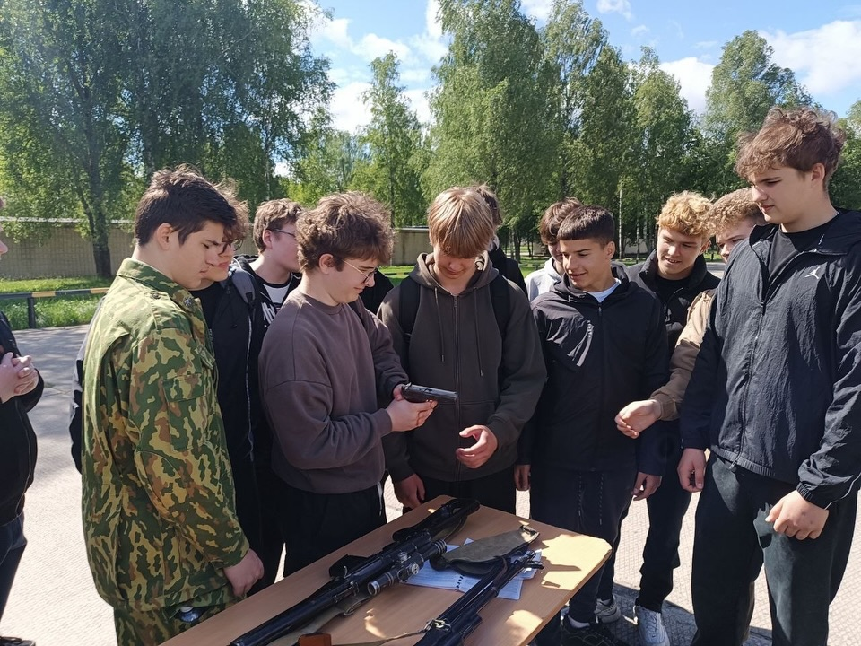
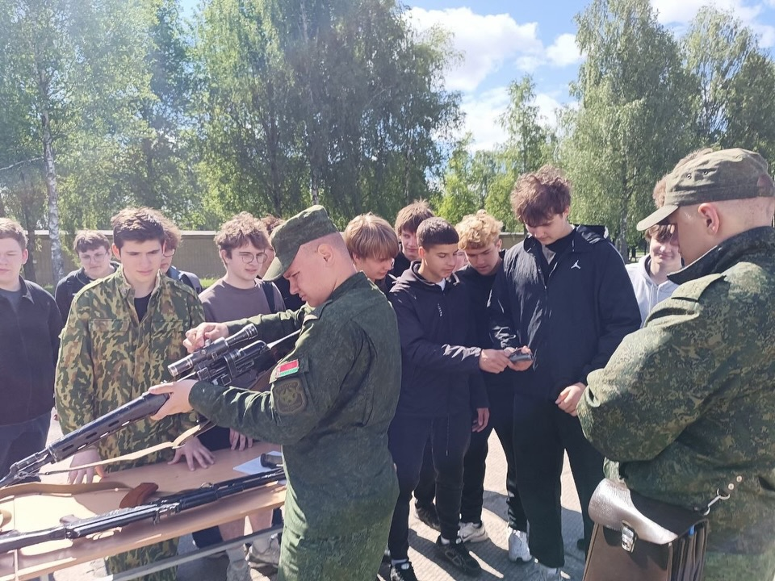
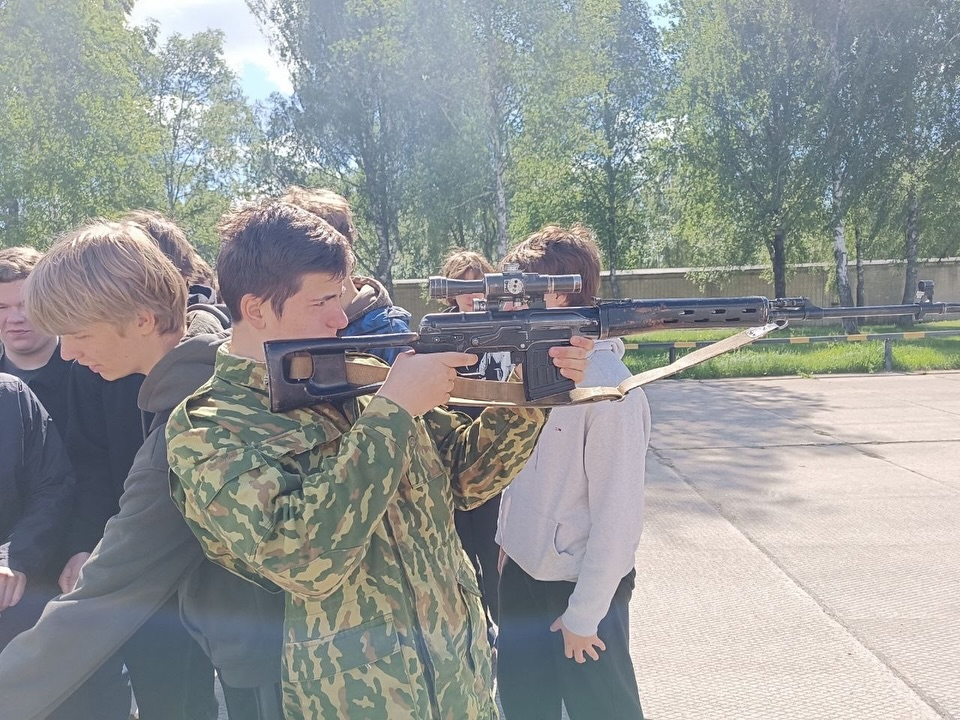
«Сначала мы побывали на одной из технических территорий 72 гвардейского ОУЦ ПП и МС. Было невероятно интересно вживую увидеть вооружённую технику и стрелковое оружие Вооружённых Сил Республики Беларусь.
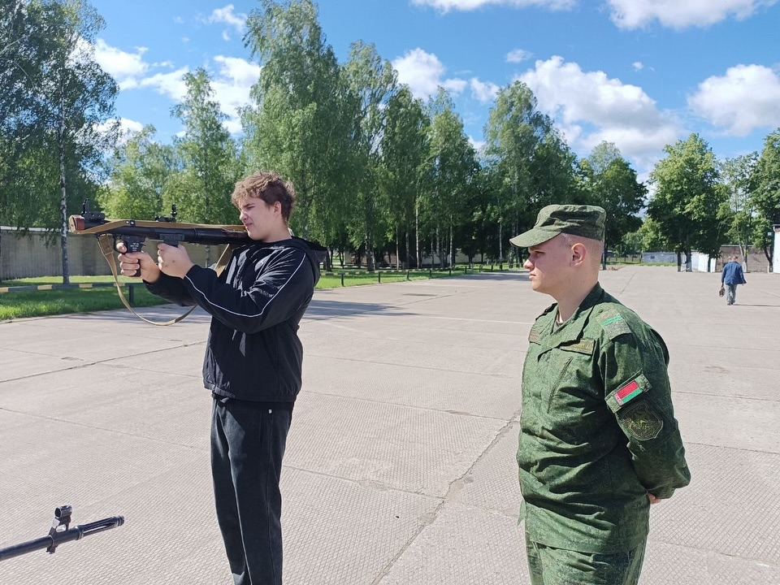
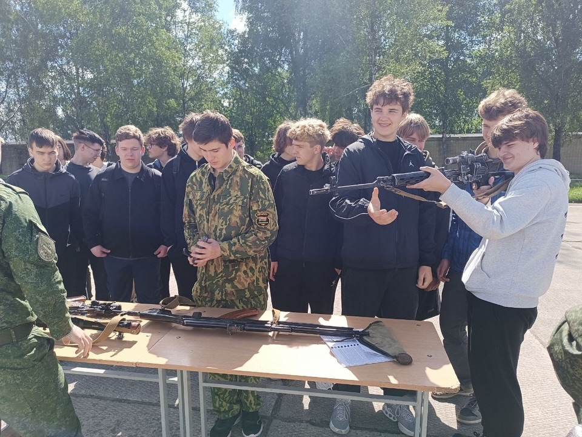
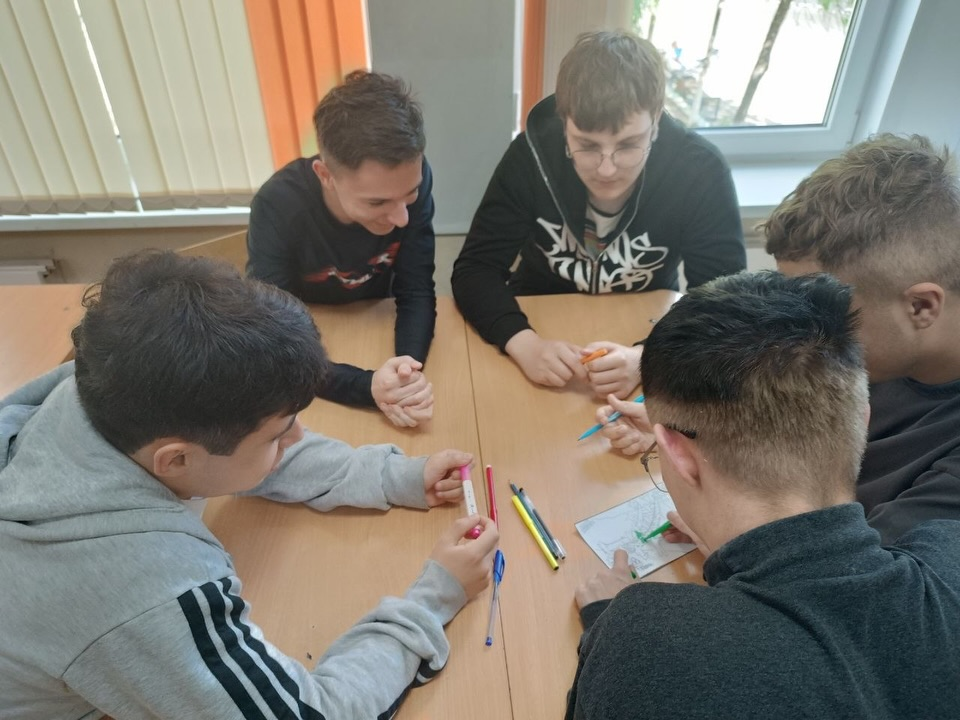
Затем нас ждал кинолекторий, посвящённый событиям Великой Отечественной войны и геноциду белорусского народа. Эти истории трогают до глубины души и напоминают, как важно беречь мир.
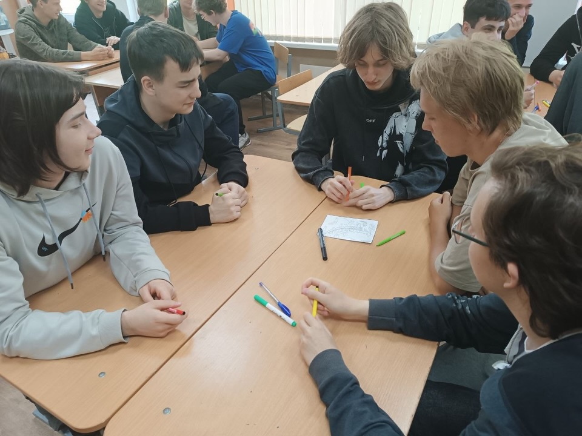
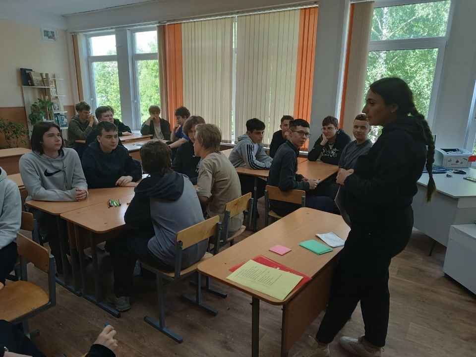
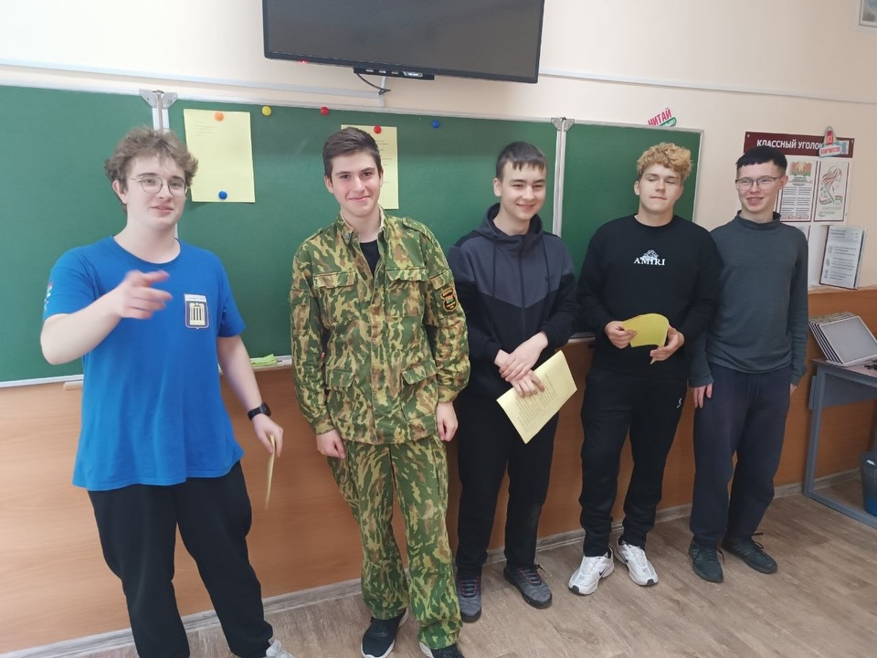
А завершился день мероприятием «Вызов», которое помогло нам ещё больше сплотиться. Мы работали в команде, поддерживали друг друга и получили массу позитивных эмоций!» - делится впечатлениями Вячеслав Павлович, заместитель командира взвода.
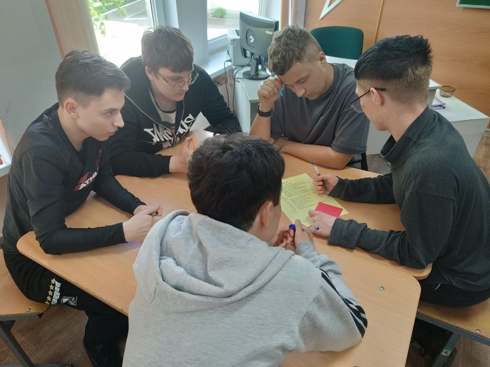
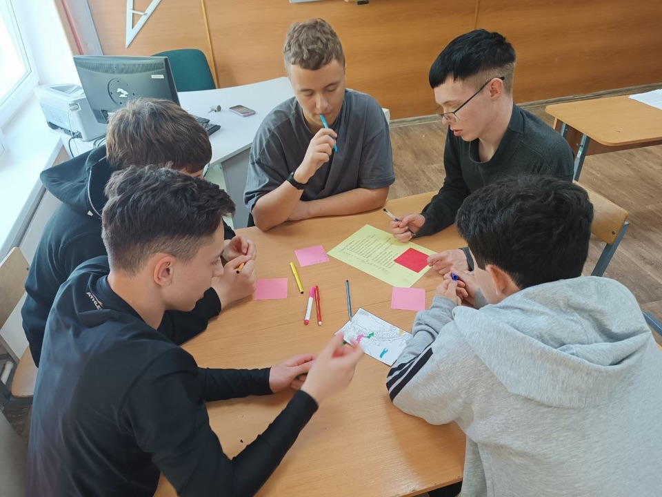